Source Code
Build the source code
Fill in the Lesson Plan
Share it with other instructors
Classroom tests with Sandbox Mode
...
Learning Objectives
Work with source code provider
Focus on 1 concept
Prioritize coding literacy
Prioritization
Direct requests from the sales team
Content that complements what's currently available
...
Create Sprint
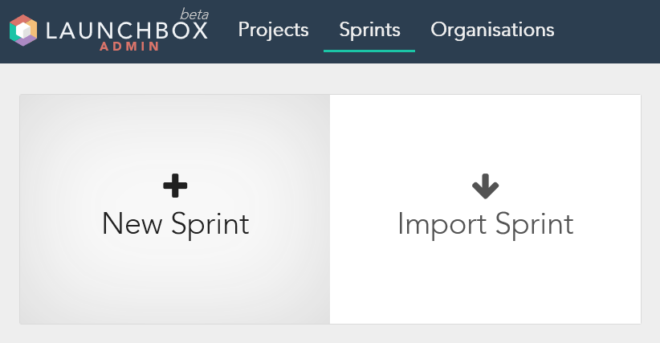New Sprint
Create a sprint from sracth
Import Sprint
Create a sprint from imported data
Sprint Info
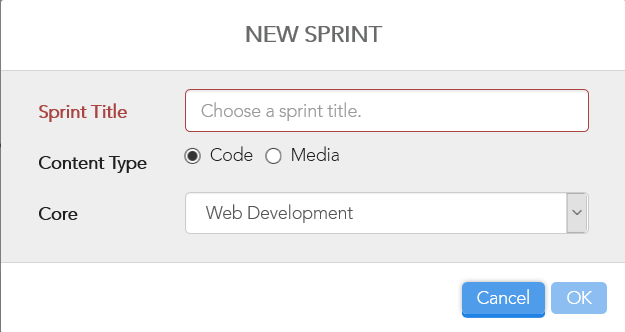Sprint Title
Include syntax in the sprint name
...
Content Type
...
Core
Select the appropriate core
Description & Settings
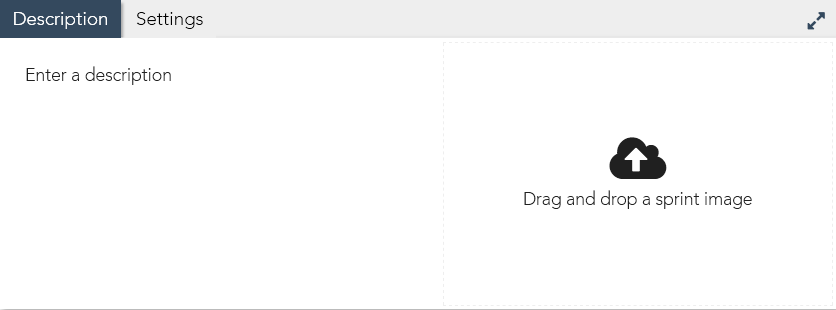Description must be short enough to fit inside the pop-up window in Learner Mode
No image is needed for sprints
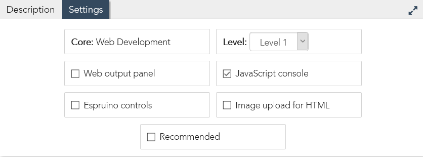Select the appropriate level according to the Core Curriculum
Don't forget to enable JavasScript console if the sprint requires it
Srpint Structure
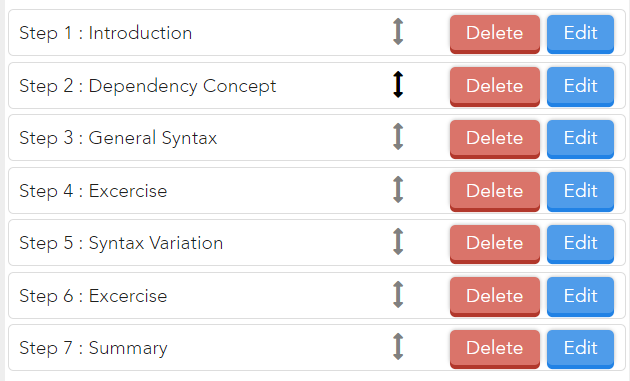The first step should always be named Introduction
Include dependency step if the sprint requires it
Dedicate one step to the syntax
All relevant variants of the syntax should also be covered
Reinforce all knowledge based steps with excercises
The last step should always be named Summary
See Guidelines for step naming convention
Curriculum
...
...
...
...
...
...
...
Instruction Formatting
Using Template
Click to select & copy everything under Template, paste into the instruction panel
Line Numbering
Given a particular line in the CSS file contains the string catpaw and it occurs exactly once in the entire CSS code, the number of that line can be retrieved dynamically using the following code
##LINE("style.css","catpaw")##
The resulting location can also be offset
##LINE("style.css","catpaw")+2##
All line locations must be dynamically referenced
Line locations should look like this in Learner Mode
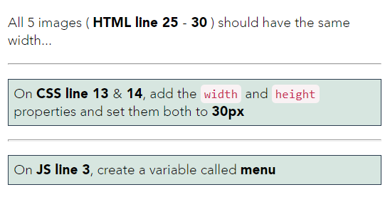Code References
Always highlight code references

Highlight selection should be limited to syntax only
Code Snippet
Code inside a snippet should primarily help to understand syntax structure, do not give actual functioning code
Alert the learner to not use the snippet for copy-and-paste workflow
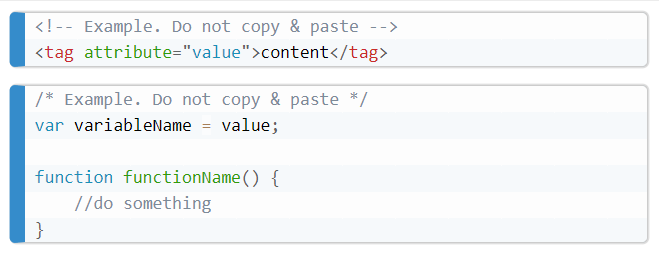Images
All images must themselves be hyperlinks that open in a new tab
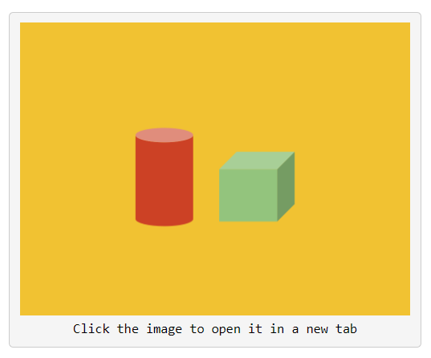Objectives
Visually separate the objectives from the rest of the instruction text
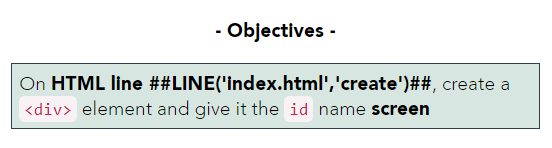When tab switching is required to complete the objectives, use the Notes format to alert the learner

Offer tips to help the learner progress, but don't give out answers
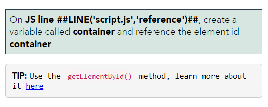There should be no more than 3 objectives in a step
...
...
Step: Introduction
Scenario
Describe a common scenario where the learning outcome may be useful
Keep the information general because this step won't be tested and there is no way to ensure the learner retains what's stated here
Learning Outcome
Specifically what the learner will and/or won't do in this sprint
Results
Visual demonstration of what can be achieved, this can be in the output panel if the sprint produces a visually interesting output, otherwise use external visuals
Template
In this sprint you will learn how to turn any element into an inline element.
 Click the image to open it in a new tab
Click the image to open it in a new tab
When you're ready, click Next Step to get started
Step: Dependency Concepts
Overview
Skip if there is no dependency
If the dependency is an available sprint on LaunchBox, simply provide link and redirect learner, the link should always open a new window
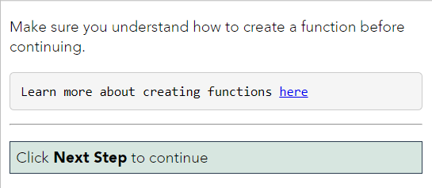Otherwise, start with the dependency name and a general description of the concept, clarify any abbreviated terms
Relevance
How the concept relate to this sprint and its encompassing domain
Examples & Breakdowns
Demonstrate a practical use case, break it down and explain each component
Use the code snippet and/or bullet points to emphasize this section
Objectives
Focus on having the learner reproduce the syntax
If there is no syntax involved, just make sure to test the learner's understanding of the concept
Template
On the web, a typical parent-child relationship looks like this:
<!-- Example. Do not copy & paste -->
<div id="parent">
<p class="child"></p>
<img class="child" src="#">
</div>Both
<p>and<img>are child elements of<div>The
<p>element is the first childThe
<img>element is the second child
- OBJECTIVES -
On HTML line ##LINE('index.html','<html>')## - ##LINE('index.html','</html>')##, find the second child of the <html> element
Switch over to the style.css tab
On CSS line ##LINE('style.css','UNIQUE STRING')##, Add a selector to target the second child
Check Objectives to continue
Step: Syntax & Variation
Syntax & Breakdowns
Describe the purpose of the syntax
Show it inside the code snippet and make clear to not copy & paste the content of the snippet
Break the syntax down into components and explain each one
Example
Show functional use of the syntax, relate components in the syntax to natural language
Objectives
Focus on having the learner reproduce the syntax
Template
A function can run some time after it is called, and here is how you can do it:
/* Example. Do not copy & paste */
setTimeout(functionName, delay);functionNameis the name of the function we want to calldelayis the amount of milliseconds the function will wait before it runsExample:
setTimeout(sayHello, 500);will run thesayHello()function with a 500 milliseconds delay ( i.e. after 0.5 second )
- OBJECTIVES -
On JS line ##LINE('script.js','UNIQUE STRING')##, run the sayHello() function with a 800 milliseconds delay
TIP: Use the setTimout() method
Check Objectives to continue
Step: Exercise
The Problem
Present a problem that would be ideally sovlved by the syntax from the preceding step
Help to understand the problem rather than explaining how it can be solved
The Question
Clearly state the expected outcome without giving away any code-related information
Objectives
Focus on having the learner apply the syntax
Template
How can you make the 3 images all have the same size?
- OBJECTIVES -
On CSS line ##LINE('style.css','image 2')##, make the 2nd image the same size as the other two
Check Objectives to continue
Step: Summary
Recap
Reinterate the objectives completed by the learner
End Note
Mention Sandbox Mode where the learner can test things out further
Template
Add the
width&heightproperties to elements to resize themUse both px and % values for different effects
Don't forget to try things out in Sandbox Mode
Workflow
Define the state of the code in each step that best relate to the instructions
Don't use modify content at all during this stage, focus on progression and flow
Revise the instruction if necessary
...
General Formatting
The first HTML, CSS and JavasScript file should always be named index.html, style.css and script.js respectively
Separate words in file names with the dash symbol, e.g. about-page.html
Set unused files to hidden
Make sure to exclude the <script> element from the HTML code when the script file is abscent
Ensure proper indentation, one indentation is 4 spaces
...
Editable Blocks
An editable block creates a fixed space in the code panel where the learner can type, an empty editale should always contain 4 spaces
#BEGIN_EDITABLE# #END_EDITABLE#
Occupied editable blocks should have a 1 space padding on both ends
#BEGIN_EDITABLE# var foo = "bar"; #END_EDITABLE#
...
Editable Lines
When #BEGIN_EDITABLE# and #END_EDITABLE# are on separate lines, editable lines are created for the learner
<body>
#BEGIN_EDITABLE#
#END_EDITABLE#
</body>
It's not necessary to add empty lines between #BEGIN_EDITABLE# and #END_EDITABLE because editable lines allow the learner to create new lines in the code
Known Issues
#BEGIN_EDITABLE# creates an editable line and a locked line before it, #END_EDITABLE# creates an editable line and a locked line after it.
Comments
Comments on top of editable blocks containing code
Comments next to empty editable blocks
...
Flow Assessment
Work with other instructors to ensure the flow will work in classrooms
There should be 3 or less objectives per step
Every step is tested
Paragraphs are kept short & concise
Language & tone is appropriate
AST
The Syntax
Use the following AST syntax to test HTML & CSS code:
pass.if.html.editable(n).equivalent(expectedCode);
pass.if.css.editable(n).equivalent(expectedCode);
editable(0) targets code in the first editable, editable(1) the second, and so on...
Use parenthesis to indicate editable location, using square brackets is not considered the AST approach
expectedCode must be valid code
If the code files do not have default names, i.e. index.html and style.css, use the following syntax instead
pass.if.fileName.html.editable(n).equivalent(expectedCode);
pass.if.fileName.css.editable(n).equivalent(expectedCode);
Feedback
Don't always rely on auto-generated feedback, write elaborate error messages when it is necessary
pass("useful feedback here").if.html.editable(n).equivalent("");
Provide line numbers when a single objective tests code in multiple places
pass("CSS LINE 11 - feedback").if.css.editable(2).equivalent("width: 20px");
pass("CSS LINE 13 - feedback").if.css.editable(3).equivalent("height: 50px");
When the position of editable(n) is unpreditable, use the following function to retrive line number dynamically
function line(file, str) {let n; file.text.split(/\r?\n/).forEach((e, i) => { e.includes(str) ? (n = i + 1) : null }); return n;}
line(file, str) returns a number indicating the location of str in the specified file
file can be code.html, code.css or code.js if the file has the default name, otherwise use code.fileName.html, code.fileName.css or code.fileName.js
str must be a unique string that can be found exactly once in the target file
Example
function line(file, str) {let n; file.text.split(/\r?\n/).forEach((e, i) => { e.includes(str) ? (n = i + 1) : null }); return n;}
pass("CSS LINE " + line(code.css, '#body') + " - feedback").if.css.editable(2).equivalent("");
pass("HTML LINE " + line(code.gallery.html, '<div id="main">') + " - feedback").if.html.editable(3).equivalent("");
pass("JS LINE " + (line(code.js, 'var foo;') + 9) + " - feedback").if.js.editable(2).equivalent("");
Quotations
Both single & double quotes are allowed by the AST tests, as long as the opening & closing quotes match
The following test will pass <a href="#"></a> or <a href='#'></a>
pass.if.html.editable(n).equivalent('<a href="#"></a>');
...
HTML
Element & Content
<div></div>
pass.if.html.editable(n).equivalent("<div></div>");
<button>Submit</button>
pass.if.html.editable(n).equivalent("<button>Submit</button>");
Single Attribute
<p id="info"></p>
pass.if.html.editable(n).equivalent('<p id="info"></p>');
Multiple Attributes
The following test will pass <input id="user" type="text"> or <input type="text" id="user">
pass.if.html.editable(n).equivalent.to('<input id="user" type="text">');
Partial Syntax
Given that line n in the HTML file is <img #BEGIN_EDITABLE# #END_EDITABLE#> and the learner is expected to insert src="http://link.png", use the following test
pass.if.html(code.html.text.split(/\r?\n/)[n - 1]).equivalent('<img src="http://link.png">');
Alternatively, concatenate learner input with additional strings to make up valid HTML code
pass.if.html("<img " + code.html.editable[n] + ">").equivalent('<img src="http://link.png">');
Known Issues
...
CSS
Rule
div { width: 100px; height: 120px; }
pass.if.css.editable(n).equivalent("div { width: 100px; height: 120px; }");
Selector
#idName
pass.if.css(code.css.editable[0] + "{}").equivalent("#idName {}");
Property & Single Value
position: absolute;
pass.if.css.editable(n).equivalent("position: absolute");
top: 0px;
pass.if.css.editable(n).equivalent.to("top: 0").or("top: 0px").or("top: 0%");
Property & Multiple Values
margin: 5% auto 10px auto;
pass.if.css.editable(n).equivalent("margin: 5% auto 10px auto");
border: solid black;
pass.if.css.editable(n).equivalent.to("border: solid black").or("border: black solid");
Although border: solid black and border: black solid are both valid and will produce the same result, ordering standards do exist and should be respected by LaunchBox
Partial Syntax
Refer to Partial Syntax in the HTML card
Known Issues
The following test is syntactically correct but a valid input triggers the error "Make sure you have a semi-colon after ..."
pass.if.css.editable(n).equivalent('background-image: url("http://link.png")');
The following test can not test for multiple selectors
pass.if.css.editable(n).equivalent("#idName, .className, tagName {}");
...
CSS Global [Upcoming]
Syntax
Pass the learner if the target CSS file contains a rule with specified selector and declaration
pass.if.css.selector(selector).contains(declaration);
The default CSS file is style.css, use if.fileName.css to target additional CSS file
selector and declaration must be string values
declaration must be valid CSS code
JavasScript
RegExp
AST syntax for testing JavasScript is not yet implemented, use Regular Expression to achieve similar results
...
...
Instructor Team
...
...
...
...
...
...
...
Publish
...
...
...
...
...
...
...
Code Club
...
...
...
...
...
...
...